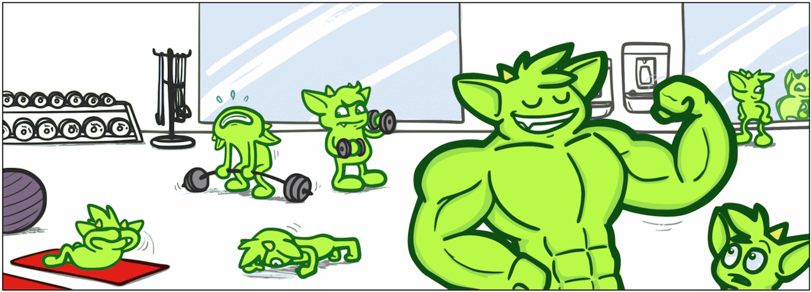

Apache TinkerPop 是一个开源的图计算框架。在这其中，TinkerPop 代表了很多的功能和技术，并且在它广阔的生态系统下还另外扩展了第三方贡献图库和系统的世界。TinkerPop 的生态系统对于新手来说可能是复杂的，尤其是第一次浏览参考文档的时候。
所以，你要从哪里开始使用 TinkerPop 呢？你如何快速入门并且获得成果？
Gremlin，TinkerPop 世界里最知名的公民，让它来帮助你完成入门，之后，你也可以使用 TinkerPop 构建图应用程序了。

认识 Gremlin
Gremlin 可以帮助你浏览一个图中的点和边。他本质上是你用来查询图数据库的语言，就和 SQL 是用来查询关系型数据库的语言一样。为了告诉 Gremlin 他如何「遍历」图（也就是你想做的查询）你需要一种方法来用他明白的语言下达命令，这货总给你语言当然也叫做「Gremlin」。对于此事，你需要一个 TinkerPop 最重要的工具：Gremlin 控制台
待续